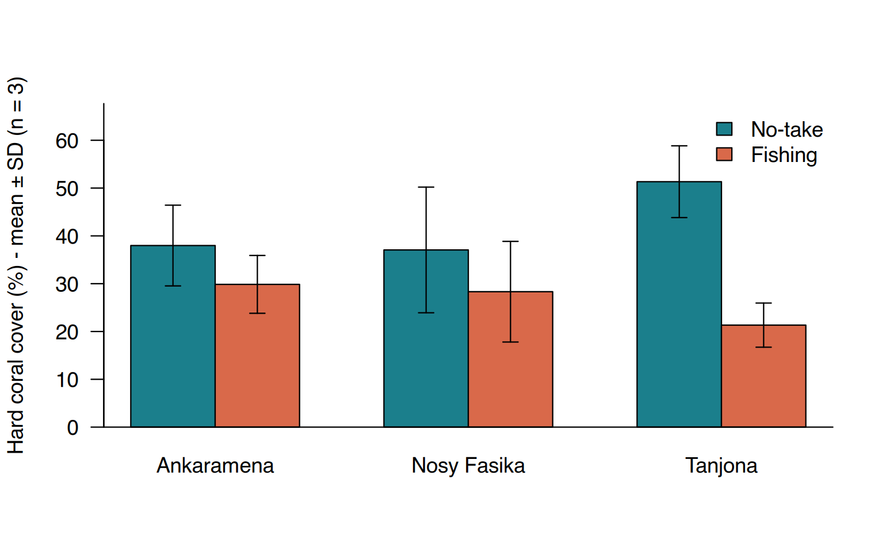

This is your final test: the quiz at the end is your course score.
C’est votre test final : le quiz à la fin constitue votre note du cours.
A monitoring team surveyed 3 MPAs (Ankaramena, Nosy Fasika, Tanjona — invented names, simulated data). In each MPA they sampled two zones: the No-take zone (fishing forbidden) and the Fishing zone around it. In each zone they laid 3 transects of 25 m and recorded the benthic category under the tape every 0.5 m (50 points per transect, PIT method, see Session 7).
Three observers entered the data in a shared sheet; the files were
then merged. The result is coral_cover_raw.csv.
| Column | Content |
|---|---|
date |
survey date |
mpa |
MPA name |
zone |
No-take or Fishing |
transect |
1, 2 or 3 |
point |
1 to 50 along the tape |
depth_m |
transect depth (m) |
category |
HC, SC, MA, TA, RB, SD (see Session 7) |
observer |
initials |
Question: Is hard coral cover higher in no-take zones than in fishing zones, and is this true in all three MPAs?
Une équipe de suivi a échantillonné 3 AMP (Ankaramena, Nosy Fasika, Tanjona — noms inventés, données simulées). Dans chaque AMP, deux zones : la zone de non-prélèvement (No-take, pêche interdite) et la zone de pêche (Fishing) autour. Dans chaque zone, 3 transects de 25 m, avec la catégorie benthique notée sous le ruban tous les 0,5 m (50 points par transect, méthode PIT, voir séance 7).
Trois observateurs ont saisi les données dans une feuille partagée ;
les fichiers ont ensuite été fusionnés. Le résultat est
coral_cover_raw.csv.
| Colonne | Contenu |
|---|---|
date |
date du relevé |
mpa |
nom de l’AMP |
zone |
No-take ou Fishing |
transect |
1, 2 ou 3 |
point |
1 à 50 le long du ruban |
depth_m |
profondeur du transect (m) |
category |
HC, SC, MA, TA, RB, SD (voir séance 7) |
observer |
initiales |
Question : La couverture en corail dur est-elle plus élevée dans les zones de non-prélèvement que dans les zones de pêche, et est-ce vrai dans les trois AMP ?
⇩ coral_cover_raw.csv ⇩ final_project_template.R
Download the template script, save it in your
scripts/ folder and complete it step by step. It contains
the structure of the analysis with blanks (...) to fill.
Everything you need was covered in Sessions 1–7. If you are stuck, go
back to the session indicated in each step below.
Téléchargez le script modèle, enregistrez-le dans
votre dossier scripts/ et complétez-le étape par étape. Il
contient la structure de l’analyse avec des trous (...) à
remplir. Tout ce dont vous avez besoin a été vu dans les séances 1 à 7.
Si vous êtes bloqué, revenez à la séance indiquée à chaque étape
ci-dessous.
Sessions 3 and 4. Import the file into an object
raw. Look at its structure, its number of rows, the unique
values of mpa, zone and category
(unique(), table(..., useNA = "always")).
Write down every problem you see before fixing
anything.
Séances 3 et 4. Importez le fichier dans un objet
raw. Regardez sa structure, son nombre de lignes, les
valeurs uniques de mpa, zone et
category (unique(),
table(..., useNA = "always")). Notez chaque problème
observé avant de corriger quoi que ce soit.
Session 4. In this order:
gsub("\\s+", " ", x) — \\s+ means “one or
more spaces”), remove leading/trailing spaces, harmonise the case with
tools::toTitleCase(tolower(x)). You must obtain exactly 3
MPAs.ifelse(tolower(zone) == "no-take", "No-take", "Fishing").toupper()), replace empty texts "" by
NA.outputs/.Séance 4. Dans cet ordre :
gsub("\\s+", " ", x) — \\s+ signifie «
un ou plusieurs espaces »), retirez les espaces de début/fin, harmonisez
la casse avec tools::toTitleCase(tolower(x)). Vous devez
obtenir exactement 3 AMP.ifelse(tolower(zone) == "no-take", "No-take", "Fishing").toupper()), remplacez les textes vides
"" par NA.outputs/.Session 7. Using your function pct_cover() and
aggregate(category ~ mpa + zone + transect, ...), build a
table db with one row per transect and a
column hc_cover (% hard coral). Check that it has the
expected number of rows (3 MPAs × 2 zones × 3 transects). Save it: this
is your database.
Séance 7. Avec votre fonction pct_cover() et
aggregate(category ~ mpa + zone + transect, ...),
construisez un tableau db avec une ligne par
transect et une colonne hc_cover (% de corail
dur). Vérifiez qu’il a le nombre de lignes attendu (3 AMP × 2 zones × 3
transects). Enregistrez-le : c’est votre base de
données.
Session 5. Compute the mean and SD of hc_cover
for each MPA × zone combination (tapply() with
list(db$zone, db$mpa), or aggregate()). Each
value is based on n = 3 transects. Also compute the
overall mean of the 9 No-take transects and of the 9 Fishing
transects.
Séance 5. Calculez la moyenne et l’ET de
hc_cover pour chaque combinaison AMP × zone
(tapply() avec list(db$zone, db$mpa), ou
aggregate()). Chaque valeur repose sur n = 3
transects. Calculez aussi la moyenne globale des 9 transects
No-take et des 9 transects Fishing.
Session 6. Draw a grouped barplot: MPAs on
the x-axis, one bar per zone, mean ± SD. With base R,
tapply() with two groups returns a matrix;
barplot(matrix, beside = TRUE) draws grouped bars and
returns a matrix of bar positions that arrows() accepts
directly. The template script contains the full code. Save the figure as
PNG (300 dpi).
Optional (Session 8): make the same figure with ggplot2
using position = position_dodge(0.8) in
geom_col() and geom_errorbar().
Séance 6. Tracez un diagramme en barres
groupées : AMP en abscisse, une barre par zone, moyenne ± ET.
En R de base, tapply() avec deux groupes renvoie une
matrice ; barplot(matrice, beside = TRUE)
trace des barres groupées et renvoie une matrice de positions que
arrows() accepte directement. Le script modèle contient le
code complet. Enregistrez la figure en PNG (300 dpi).
Facultatif (séance 8) : faites la même figure avec ggplot2
en utilisant position = position_dodge(0.8) dans
geom_col() et geom_errorbar().
At the end of your script, write 3–4 sentences as comments: Where is hard coral cover highest? Is the no-take effect the same in all three MPAs? What limits the conclusions (number of transects, SD, data simulated)? A figure is only useful with a correct caption: write one, stating what the bars and the error bars represent and the value of n.
À la fin de votre script, rédigez 3–4 phrases en commentaires : où la couverture en corail dur est-elle la plus élevée ? L’effet de la zone de non-prélèvement est-il le même dans les trois AMP ? Qu’est-ce qui limite les conclusions (nombre de transects, ET, données simulées) ? Une figure n’est utile qu’avec une légende correcte : rédigez-en une, précisant ce que représentent les barres et les barres d’erreur, et la valeur de n.
Enter the results of your analysis. Give numbers rounded to 2 decimals unless they are counts.
Saisissez les résultats de votre analyse. Donnez les nombres arrondis à 2 décimales sauf s’il s’agit d’effectifs.
Reference solution (base R). Your code may be different and still correct: what matters is that each step is justified and the numbers match.
Solution de référence (R de base). Votre code peut être différent et néanmoins correct : l’essentiel est que chaque étape soit justifiée et que les chiffres correspondent.
pct_cover <- function(categories, code = "HC") {
categories <- categories[!is.na(categories)]
sum(categories == code) / length(categories) * 100
}
# 1. Import and inspect
raw <- read.csv("data/coral_cover_raw.csv")
nrow(raw) # Q1
length(unique(raw$mpa)) # Q2
# 2. Clean
raw$mpa <- tools::toTitleCase(tolower(trimws(gsub("\\s+", " ", raw$mpa))))
raw$zone <- ifelse(tolower(raw$zone) == "no-take", "No-take", "Fishing")
raw$category <- toupper(trimws(raw$category))
raw$category[raw$category == ""] <- NA
sum(duplicated(raw)) # Q3
pts <- raw[!duplicated(raw), ]
sum(is.na(pts$category)) # Q4
pts <- pts[!is.na(pts$category), ]
nrow(pts) # Q5
write.csv(pts, "outputs/coral_points_clean.csv", row.names = FALSE)
# 3. Database
db <- aggregate(category ~ mpa + zone + transect, data = pts, FUN = pct_cover)
names(db)[names(db) == "category"] <- "hc_cover"
nrow(db) # Q6
db[db$mpa == "Tanjona" & db$zone == "No-take" & db$transect == 1, ] # Q7
write.csv(db, "outputs/coral_transects_db.csv", row.names = FALSE)
# 4. Mean and SD
m <- tapply(db$hc_cover, list(db$zone, db$mpa), mean)
s <- tapply(db$hc_cover, list(db$zone, db$mpa), sd)
round(m, 2); round(s, 2) # Q8, Q9, Q10, Q11
round(tapply(db$hc_cover, db$zone, mean), 2) # Q12, Q13
round(m["No-take", ] - m["Fishing", ], 2) # Q14
# 5. Figure
m <- m[c("No-take", "Fishing"), ]; s <- s[c("No-take", "Fishing"), ]
png("outputs/fig_hard_coral_cover.png", width = 18, height = 12, units = "cm", res = 300)
bp <- barplot(m, beside = TRUE, ylim = c(0, max(m + s) * 1.15),
col = c("#1b7f8c", "#d9694a"), las = 1,
ylab = "Hard coral cover (%) - mean ± SD (n = 3 transects)")
arrows(bp, m - s, bp, m + s, angle = 90, code = 3, length = 0.06)
legend("topright", fill = c("#1b7f8c", "#d9694a"), legend = rownames(m), bty = "n")
box(bty = "l")
dev.off()The expected figure:
La figure attendue :

Congratulations — you can now take raw field data all the way to a
summary table and a figure, with a script that anyone can re-run. The
intermediate course will cover data reshaping (tidyr),
joining tables, dates, statistical tests (t-test, ANOVA, non-parametric
tests) and linear models, and reporting with R Markdown.
Félicitations — vous savez désormais mener des données brutes de
terrain jusqu’à un tableau de synthèse et une figure, avec un script que
n’importe qui peut relancer. Le cours intermédiaire abordera la
restructuration des données (tidyr), les jointures de
tableaux, les dates, les tests statistiques (test t, ANOVA, tests non
paramétriques) et les modèles linéaires, ainsi que la rédaction de
rapports avec R Markdown.